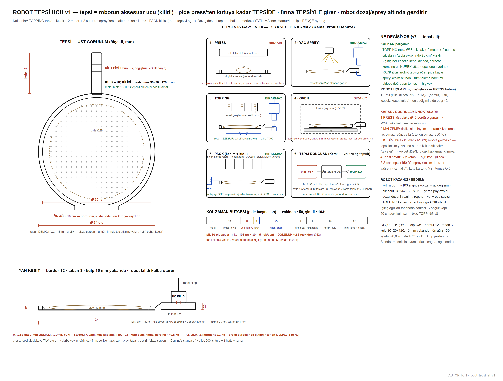

Tek kol, 300 cm ray, üç uç: tepsi eli, pençe, çatal. Pideye dokunmaz; pide press'ten kutuya kadar tepsidedir. Modelin altındaki çubuktan kesit alabilir (X/Y/Z) ve iki noktaya tıklayıp ölçü çıkarabilirsin.
sürükle: döndür · üstüne gel: birim · çift tıkla: aç · alttan kesit + ölçü
22 EYLÜL 2026 · MODEL GÜNCEL, METİN ESKİ
Yukarıdaki 3B model HAT v19'a göre güncel. Bu istasyonun birimleri henüz ölçü kutusu — sırası gelince gerçek üretim modeline çevrilecek (örnek: 3 · TOPPING).
Aşağıdaki açıklama metinleri 14 Eylül'ün 4200 mm'lik tepsili hattından kalmadır, güncel değildir.
1 · Ne yapar · çalışma senaryosu
Ray koridor boyunca 300 cm (x 60–360), eksen ince duvara 14, hat önüne 76; robot koridoru kapalı, tek kilitli kapı.
PENÇE: hamur topu, kutu (yanlardan), içecek ve tatlı.
ÇATAL: 2 lama 16×12 mm × 50 cm + sırt plakası ≈ 2 kg; kabı kızaklarından önden alır: gir 50 → kaldır 0,5 → çek 70 (5° yatık taşıma).
Uç değiştirici PRESS kabininin altında (yatay yuvalar). Haftalık: ≈ 14 kap değişimi + 4 STORE→ALT taşıma (gece).
2 · Özellikler · karar özeti
Sınıf16–20 kg kobot; en ağır yük kıyma kabı 7,5 + kap 5,7 + çatal 2,0 = 15,2 kgMenzildükkan v7: dolap dibi 119/132, TOPPING kap dibi çatalla 113, STORE/PACK 111 → ≥ 142AdaylarFanuc CRX-20iA/L 142 · Doosan H2017 170 · Techman TM20 130 (sınırda) · UR16e 90 ✗Doluluk≈ %85 (103 sn/pide)Güvenlikkapalı koridor, kapı açılınca durur; müşteri hiçbir noktadan ulaşamazUç değiştiriciSMARTSHIFT / RSP CoboShift sınıfı: pim + burç + kilit, 2–3 sn, ±0,1 mm; yuvalar PRESS kabininin altındaTepsi ucukulplu tepsi Ø32, kulp paslanmaz 6 cm = kilit pimi (350 °C tepsiyi silikon pençe tutamaz, metal-metal kilit şart); taban 3 mm delikli alüminyum + seramik yapışmaz kaplama, bordür 12 mm, 13 cm açık ön ağız, ≈ 0,8 kgPençe ucu2 mafsallı adaptif pençe 0–140 mm (Robotiq 2F-140 sınıfı) + gıda silikonu soft parmak (mGrip / DoughGripper sınıfı); bilekte kameraKalkanlarkürek yüzü, bilek çevirme, TOPPING tablası + kızak + 2 motor, PACK iticisi, pideye doğrudan temas, vakum — hepsi tasarımdan çıktıArıza planıyedek pençe ve tepsiler uç yuvasında (robot kendisi takar); mekanik arızada "servis dışı" + entegratör servis sözleşmesi (SLA). Kol durunca hat durur — tek nokta riski bilinçli kabul
BEYİN — üç katmanlı kontrol
Katman 1 · PLC (refleksler)Siemens S7-1200 sınıfı endüstriyel kontrol kartı; motorlar, kapaklar, ısıtıcılar, sensörler buna bağlı. Robot kolun kendi kontrol kutusu kolla gelir, PLC ona iş verirKatman 2 · mini endüstriyel PC (akıl)fansız, avuç içi (≈ 10–30 bin TL): sipariş kuyruğu, reçeteler, FIFO ve süre bekçileri, kiosk/dolap ekranları, kamera işleme, platform entegrasyonlarıKatman 3 · kiralık bulut (uzaktan göz)ayda ≈ 300–1.000 TL sanal sunucu: telefondan canlı panel, satış kayıtları, uzaktan güncelleme, arıza bildirimiYeroda yok, sunucu satın alma yok, laptop yok — hepsi PICKUP panosunun rafında, ayakkabı kutusu hacmindeİnternet koparsadükkân yerel beyinle çalışmaya devam eder; yalnız uzaktan izleme kesilirSiparişin yolculuğukiosk / platform → mini PC reçeteyi kuyruğa yazar → adımlar tek tek PLC'ye → her adım sensör onayıyla ilerler → biten sipariş dolaba eşlenir, müşteriye kod
3 · Teknik resimler

Robot tepsi ucu v1 — pide press'ten kutuya kadar tepside
Kol bandı ≈ 600 bin – 1,8 mln TL, 3–4 m ray 150–300 bin TL. Toplam anahtar teslim entegrasyon 400–600 bin TL bandında konuşuluyor; teklifle netleşecek.
5 · Soru işaretleri · açık konular
#
Problem
Durum
Çözüm / not
⑦
Kol yükü + menzil — kobot seçimi
AÇIK
CRX-20iA/L ya da H2017
⑫
Tepsi eli v2 (kulp 6 + çatal)
AÇIK
çizilecek
R-T1
Pideye doğrudan temas / hizalama
ÇÖZÜLDÜ
tepsi
R-T2
Sıcak tepsi ile uç
ÖNERİ VAR
ısı köprüsü kesik
R-T3
Tepsi havuzu / yıkama
AÇIK
8–10 tepsi
R-T4
Kol doluluğu %85
AÇIK
çevrim optimizasyonu
6 · Sürüm geçmişi
Dükkan v7 (7 Eyl): ray 300, erişim kontrolü CRX ile ✓
v25/v27 (5 Eyl): ÇATAL ucu + kızak ±5
4 Eyl: tepsi eli v1, tepsi hareket analizi v2
Ağu: kombine el, ray üstünde tek kol kararı
AUTOKITCH · HAT · Yol C canlı tasarım defteri · kaynak: arastirma/ (DUZEN.md, PROBLEMLER.md, paftalar) · 7 Eyl 2026